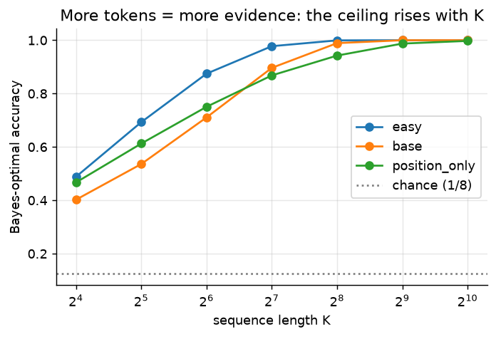
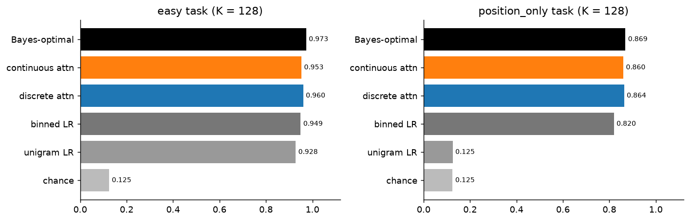
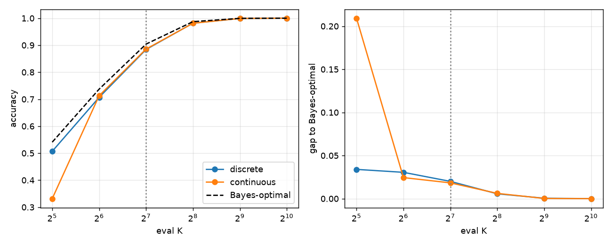
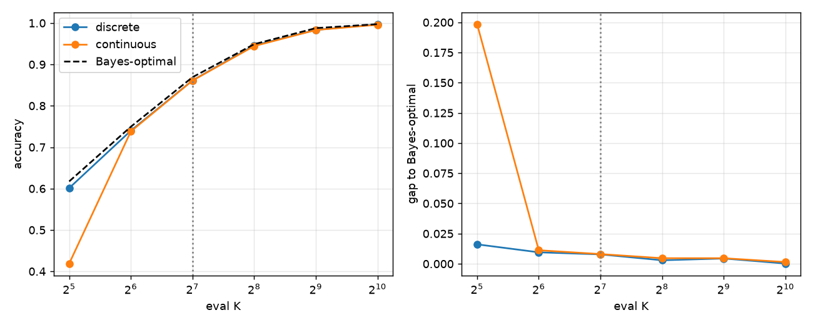
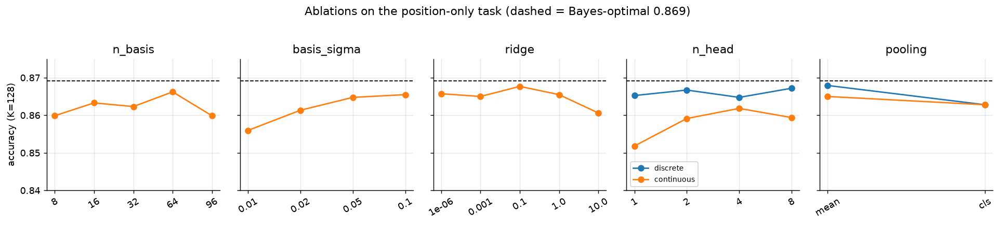

Discrete vs. Continuous Attention for Sequence Classification
PIC2/thesis)TL;DR
- The thesis asks whether continuous attention can replace standard softmax attention in a Transformer classifier without losing accuracy, and whether it is cheaper at long lengths. In continuous attention (from the ∞-former), each query attends with a Gaussian density over a continuous-time version of the sequence.
- To measure this cleanly, the models are tested on a synthetic task with a known Bayes-optimal accuracy. Classes differ by how token statistics vary smoothly with relative position \(t\in[0,1]\). This gives an exact ceiling to measure each model against.
- Accuracy: both models get within about 1 percentage point of the Bayes-optimal accuracy at \(K=128\). On the position-only task, discrete attention scores 0.864, continuous 0.860, and the ceiling is 0.869. Both beat position-aware logistic regression (0.820), so they really do use positional structure.
- Cost: with a fixed number of basis functions (\(N_b=32\)), continuous attention scales linearly in \(K\). A training step at \(K=2048\) takes 54 ms against 335 ms for discrete on GPU (6× faster), and 1.35 s against 2.62 s on CPU. Peak GPU memory, however, is not lower.
- Length generalisation: I trained at \(K=128\) and tested at other lengths. Both models generalise to longer sequences. Continuous attention collapses on shorter sequences (\(K=32\): 0.33 vs 0.51 for discrete), and I discuss a likely cause in §7.3.
- Continuous attention is robust to its own hyper-parameters (\(N_b\), basis width, ridge). The one exception is the number of heads: with 1 head, it loses 1.7 points.
1. Research question and overall pipeline
Standard self-attention compares every token with every other token, so it costs \(O(K^2)\) in the sequence length \(K\). Continuous attention (Martins et al., 2020; the ∞-former, Martins et al., 2022) takes a different route:
- It compresses the \(K\) hidden states into a smooth function \(\bar X(t)\) described by only \(N_b\) coefficients.
- Each query then reads from that function with a probability density over \(t\), instead of a probability mass over \(K\) positions.
The thesis investigates three questions:
- Expressiveness: does this compression lose information that matters for classification?
- Efficiency: does it actually make training faster or cheaper in practice as \(K\) grows?
- Inductive bias: where do the Gaussian heads learn to look, and does continuous time help when sequence lengths change?
data/synthetic.pypositional.pyblocks.py, attn_*.pyclassifier.pytrain.pyThe only thing that changes between the two models is the attention module (highlighted). Everything else is identical, including the training data stream, seeds, optimiser and evaluation sets. Any difference in results can therefore be attributed to the attention mechanism.
2. Theory: discrete (softmax) self-attention
Let \(X\in\mathbb R^{K\times d}\) be the hidden states. For one head, the model computes queries \(Q=XW_Q\), keys \(K=XW_K\) and values \(V=XW_V\). Each query \(q_i\) produces a probability distribution over the \(K\) positions:
\[ p_i(j) = \frac{\exp(q_i^\top k_j/\sqrt{d_h})}{\sum_{j'}\exp(q_i^\top k_{j'}/\sqrt{d_h})}, \qquad z_i = \sum_{j=1}^{K} p_i(j)\, v_j = \mathbb E_{j\sim p_i}[v_j]. \]It helps to write the output as an expectation of the values under a distribution, because that view generalises directly to continuous attention. Martins et al. show that softmax is the solution of an entropy-regularised maximisation over the probability simplex \(\Delta^K\):
\[ p_i = \arg\max_{p\in\Delta^{K}} \; \mathbb E_{p}[s_i] + H(p), \qquad s_i(j)=q_i^\top k_j/\sqrt{d_h}, \]where \(H\) is the Shannon entropy. Computing all scores \(s_i(j)\) costs \(O(K^2 d)\) time. Fused kernels such as FlashAttention avoid storing the \(K\times K\) matrix, but they cannot avoid computing it.
model/attn_discrete.py
q, k, v = self.c_attn(x).split(self.n_embd, dim=2)
q, k, v = (z.view(B, T, H, C // H).transpose(1, 2) for z in (q, k, v))
y = F.scaled_dot_product_attention(q, k, v, dropout_p=..., is_causal=False) # bidirectionalThis is nanoGPT's attention with the causal mask removed. The task is classification, so every token may see every other token.
3. Theory: continuous attention
Continuous attention replaces the finite set of positions \(\{1..K\}\) with the interval \([0,1]\). Position \(i\) is mapped to time \(t_i = i/K\). There are three ingredients.

3.1 From \(K\) states to a continuous signal (ridge regression on radial basis functions)
Choose \(N_b\) Gaussian radial basis functions \(\psi_j(t)=\mathcal N(t;\,c_j,\,s^2)\), with centres \(c_j\) spaced evenly in \([0,1]\) and default width \(s=1/N_b\). The value vectors \(V\in\mathbb R^{K\times d}\) are approximated by a smooth signal
\[ \bar X(t) = B^\top \psi(t), \qquad B\in\mathbb R^{N_b\times d}. \]The coefficients \(B\) are found by ridge regression on the grid \(t_1,\dots,t_K\). Let \(F=[\psi(t_1),\dots,\psi(t_K)]\in\mathbb R^{N_b\times K}\). Then
\[ B = \arg\min_B \|F^\top B - V\|_F^2 + \lambda\|B\|_F^2 \;=\; \underbrace{(FF^\top+\lambda I)^{-1}F}_{G_K\;\in\;\mathbb R^{N_b\times K}}\;V. \]The key point is that \(G_K\) depends only on the length \(K\) and not on the data. It is computed once in float64 and cached. Fitting the signal is then a single matrix product, \(B=G_KV\), which costs \(O(KN_bd)\).

model/attn_continuous.py — ContinuousBasis
def G(self, K, device, dtype):
"""G_K = (F F^T + lambda I)^{-1} F, (N_b, K); depends only on K."""
t = time_grid(K, device=device, dtype=torch.float64)
Fm = self.psi(t).T # (N_b, K)
A = Fm @ Fm.T + self.ridge * torch.eye(self.n_basis, ...)
self._G_cache[key] = torch.linalg.solve(A, Fm).to(dtype)
def fit(self, X): # (Bsz, K, d) -> (Bsz, N_b, d)
return torch.einsum("nk,bkd->bnd", self.G(X.shape[1], X.device, X.dtype), X)3.2 Gaussian attention densities
Discrete attention picks a distribution over \(K\) points. Continuous attention instead picks a density over \([0,1]\). The same entropy-regularised view as in §2 applies, now with differential entropy:
\[ p_i = \arg\max_{p} \; \mathbb E_{p}[f_i(t)] + H(p) \;\;\Rightarrow\;\; p_i(t)\propto \exp f_i(t). \]If the score function is quadratic, \(f_i(t) = -\tfrac{(t-\mu_i)^2}{2\sigma_i^2}\), the solution is exactly a Gaussian \(\mathcal N(\mu_i,\sigma_i^2)\). This is the "continuous softmax". As in the ∞-former, each head maps its query to the two parameters with an affine map and a squashing function:
\[ \mu_i = \mathrm{sigmoid}(w_\mu^\top q_i + b_\mu)\in(0,1), \qquad \sigma_i^2=\mathrm{softplus}(w_\sigma^\top q_i + b_\sigma) > 0. \]3.3 The closed-form read-out
The context vector is the expected value of the signal under the density:
\[ z_i = \mathbb E_{p_i}[\bar X(t)] = B^\top\,\mathbb E_{p_i}[\psi(t)]. \]Because both \(p_i\) and \(\psi_j\) are Gaussians, the expectation is a Gaussian convolution identity:
\[ \mathbb E_{t\sim\mathcal N(\mu,\sigma^2)}\big[\mathcal N(t;c_j,s^2)\big] = \int \mathcal N(t;\mu,\sigma^2)\,\mathcal N(t;c_j,s^2)\,dt = \mathcal N(\mu;\,c_j,\,\sigma^2+s^2). \]Attention therefore reduces to computing \(N_b\) scalar weights per query and taking one matrix product with \(B\). No integral is evaluated numerically, and the test test_expected_psi_closed_form_matches_numerical_integration confirms the formula against brute-force integration.
model/attn_continuous.py — ContinuousSelfAttention.forward
Bcoef = self.basis.fit(self.v(x[:, n_prefix:])) # values -> basis coefficients (Bsz, N_b, d)
Vh = Bcoef.view(Bsz, -1, H, dh).transpose(1, 2) # split heads (Bsz, H, N_b, dh)
q = self.q(x).view(Bsz, T, H, dh).transpose(1, 2)
mu, var = self.density_params(q) # sigmoid / softplus (Bsz, H, T)
w = self.basis.expected_psi(mu, var) # N(mu; c_j, var + s^2) (Bsz, H, T, N_b)
z = w @ Vh # read-out (Bsz, H, T, dh)3.4 Complexity
| Discrete | Continuous (fixed \(N_b\)) | Continuous (\(N_b\propto K\)) | |
|---|---|---|---|
| Scores / weights | \(O(K^2 d)\) | \(O(K N_b)\) | \(O(K^2)\) |
| Fit \(B=G_KV\) | – | \(O(K N_b d)\) | \(O(K^2 d)\) |
| Total per layer | \(O(K^2d)\) | \(O(KN_bd)\) — linear in \(K\) | \(O(K^2 d)\) |
Linear cost comes at a price. A fixed \(N_b\) means fixed resolution: as \(K\) grows, each basis function summarises more and more tokens. Whether that loses accuracy is an empirical question (§7.4).
4. Theory: the synthetic task
Real datasets make it hard to tell whether a model is limited by its architecture or by noise in the data. The synthetic generator is designed so that the optimal accuracy is known exactly, and so that the useful signal is positional and smooth, which is the regime continuous attention is built for.
Each class \(n\in\{0,\dots,N-1\}\) has two token distributions \(Q_1^{(n)}, Q_2^{(n)}\) over a vocabulary of size \(V\), drawn from a symmetric Dirichlet(\(\alpha\)). It also has a smooth mixing function \(f_n:[0,1]\to[0,1]\), drawn from one of three families: linear ramps, sines, or normalised Gaussian mixtures. Token \(i\) is sampled independently given the class:
\[ P_n(x_i) = f_n(t_i)\,Q_1^{(n)}(x_i) + \big(1-f_n(t_i)\big)\,Q_2^{(n)}(x_i), \qquad t_i = i/K. \]The class is defined on continuous time, so the same classes generate sequences of any length \(K\). This is what makes the length-generalisation experiment possible.

configs/position_only.yaml). Top: the 8 mixing functions and the two shared token distributions. Middle: the full per-position token table \(P_n(x_i=v)\) for two classes; the bright bands move with \(f_n(t)\). Bottom: real samples. A single sequence is very noisy, and the class only shows up in statistics accumulated over many positions.4.1 Bayes-optimal classifier — the ceiling
Tokens are conditionally independent given the class, and the class prior is uniform. The posterior is therefore exact and cheap to compute:
\[ \log P(n\mid x) = \sum_{i=1}^{K}\log P_n(x_i) - \log\sum_{n'}\exp\Big(\sum_i \log P_{n'}(x_i)\Big). \]No classifier can beat \(\arg\max_n P(n\mid x)\) on average. Every experiment therefore reports the gap to Bayes-optimal on the same evaluation sequences. The evaluator even prints a warning if a model beats Bayes by more than 4 standard errors, which would indicate a bug.
data/synthetic.py
def bayes_log_posterior(self, tokens):
logP = self._tables(K)["logP"] # (N, K, V)
idx = tokens.cpu().T.unsqueeze(0).expand(self.n_classes, K, B) # (N, K, B)
ll = logP.gather(2, idx).sum(1).T # (B, N): sum_i log P_n(x_i)
return torch.log_softmax(ll, dim=-1)
4.2 Positional information
To see where in the sequence the classes differ, the code computes the mutual information between the class and the token at each position, under a uniform prior:
\[ I(n; x_t) = \frac1N\sum_{n}\mathrm{KL}\big(P_n(\cdot\mid t)\,\big\|\,\bar P(\cdot\mid t)\big), \qquad \bar P = \frac1N\sum_n P_n. \]This is the grey shaded curve in Figures 3, 8 and 9. A head that "knows what it is doing" might be expected to put its attention mass where \(I\) is high.
4.3 The position-only variant: forcing the model to use position
In the default task, each class has its own \(Q\)'s, so simply counting tokens (ignoring position) already solves most of it. On the easy config, unigram logistic regression reaches 0.928 against a ceiling of 0.973. The position-only variant removes this shortcut in two steps:
- All classes share the same \(Q_1, Q_2\), so classes differ only in \(f_n\).
- Each \(f_n\) is rescaled so that \(\int_0^1 f_n(t)\,dt = \tfrac12\).
Then the expected token frequency is the same for every class:
\[ \mathbb E\Big[\tfrac1K\textstyle\sum_i \mathbf 1[x_i=v]\Big] \approx \bar f_n\,Q_1(v) + (1-\bar f_n)\,Q_2(v) = \tfrac12 Q_1(v)+\tfrac12 Q_2(v)\quad\forall n. \]Unigram counts therefore carry zero information. Unigram logistic regression drops to exactly chance (0.125), while position-binned logistic regression still reaches 0.820. Any model that beats 0.82 must be using positional structure at a finer resolution than 8 bins.
5. The model
The model is a small nanoGPT-style encoder: 2 layers, 4 heads, \(d=128\), pre-LayerNorm, GELU MLP, non-causal, about 0.4M parameters. Two design choices are specific to this thesis.
Time encoding, not index encoding
Position enters only through \(t_i=i/K\in[0,1]\), using sinusoidal features at geometric frequencies followed by a linear layer:
\[ \mathrm{pos}(t) = W\,[\sin\omega_k t,\ \cos\omega_k t]_{k=1}^{16},\quad \omega_k\in[\pi, 32\pi]. \]This is defined for every \(K\), and it uses the same time grid as the data generator and the RBF basis. The discrete model is therefore also "resolution-free", which keeps the length-generalisation comparison fair.
Prefix-aware continuous attention
With pooling=cls, a learnt [CLS] token is prepended. It is allowed to query the signal, but it is excluded from the signal fit (x[:, n_prefix:]), because it has no position \(t\).
All layers and heads share one ContinuousBasis object, so \(G_K\) is computed once per length.
model/positional.py
freqs = math.pi * torch.logspace(0, math.log2(max_freq), n_freqs, base=2.0)
...
def forward(self, t):
ang = t[:, None] * self.freqs[None, :]
return self.proj(torch.cat([ang.sin(), ang.cos()], dim=-1))6. Training & evaluation protocol
- Infinite data. Every training batch is freshly sampled from the generator, so there is no overfitting to a fixed dataset; the only limit is optimisation. AdamW is used with lr \(10^{-3}\), linear warm-up, cosine decay to \(10^{-4}\), batch size 64, and gradient clipping at 1.0.
- Fixed evaluation sets. There are 4096 sequences per evaluated \(K\), with seeds derived from \((\text{seed}, K)\). Both models and the Bayes classifier are scored on identical sequences.
- Cost measured in a device-independent way.
benchmark_steptimes forward+backward passes, andactivation_bytessums every tensor saved for backward using autograd's saved-tensor hooks. Peak CUDA memory is also recorded when a GPU is available. - Reproducible runs. Every run writes
config.yaml,task.json(all sampled \(f_n\) parameters), logs,results.jsonandmodel.pt.experiments/common.run_manyreuses finished runs and runs jobs in parallel processes. - Budgets used. Comparison and length-generalisation runs used 8000 steps; the \(K\)-sweep and ablations used 4000 steps. All results so far use a single seed (seed 0).
7. Results so far
7.1 Head-to-head at \(K=128\)


| Task | Bayes | Discrete | Continuous | Unigram LR | Binned LR |
|---|---|---|---|---|---|
| easy | 0.973 | 0.960 | 0.953 | 0.928 | 0.949 |
| position-only | 0.869 | 0.864 | 0.860 | 0.125 | 0.820 |
7.2 Where do the Gaussian heads look?
experiments/diagnose.py records \((\mu_i,\sigma_i)\) for every query and shows two things for each head: the average density (red), plotted against the positional information (grey), and \(\mu_i\) as a function of the query's own position \(t_i\).

The main observations on the position-only task:
- Layer 0, head 2 has learnt a moving window. Its \(\mu_i\) rises with \(t_i\), so each token looks around its own neighbourhood. This works like a learnt local convolution, which smooths the noisy one-hot tokens into local statistics.
- The other layer-0 heads and every layer-1 head are almost query-independent. Their \(\mu\) is nearly flat in \(t_i\), and in layer 1 they become very sharp (\(\sigma\approx 0.02\)–0.1). Each one pins a fixed spot in time (\(t\approx 0.03, 0.27, 0.7, 0.95\)) and reads the locally smoothed features there. Combined with mean-pooling, the network effectively becomes "sample the smoothed signal at 4 learnt locations and classify".
- Some of these spots line up with peaks of \(I(n;x_t)\) (for example the end of the sequence), but not all of them. This is worth quantifying further.
Easy task: the heads behave very differently (click to expand)

7.3 Length generalisation (train at \(K=128\), test elsewhere)


| eval \(K\) | 32 | 64 | 128 (train) | 256 | 512 | 1024 |
|---|---|---|---|---|---|---|
| Bayes (base) | 0.541 | 0.737 | 0.904 | 0.987 | 1.000 | 1.000 |
| Discrete | 0.507 | 0.707 | 0.884 | 0.982 | 0.999 | 1.000 |
| Continuous | 0.332 | 0.713 | 0.886 | 0.981 | 0.999 | 1.000 |
Both models extrapolate to longer sequences essentially perfectly, because of the shared \(t\in[0,1]\) parametrisation. Continuous attention fails on shorter sequences: at \(K=32\) it loses about 20 points on both tasks, while it is fine at \(K=64\).

7.4 Accuracy and cost as \(K\) grows (train = eval = \(K\))
This sweep compares three variants: discrete, cont_fixed (\(N_b=32\) at every \(K\)), and cont_prop (\(N_b=K/4\)).

| \(K\) | Discrete GPU ms | cont_fixed GPU ms | Discrete CPU ms | cont_fixed CPU ms | Discrete peak CUDA MB | cont_fixed peak CUDA MB |
|---|---|---|---|---|---|---|
| 128 | 4.4 | 6.6 | 71 | 60 | 268 | 345 |
| 512 | 28.5 | 16.1 | 315 | 223 | 1197 | 1499 |
| 1024 | 83.0 | 47.4 | 852 | 458 | 2564 | 3164 |
| 2048 | 334.6 | 54.4 | 2618 | 1354 | 5797 | 6996 |
What the sweep shows:
- Time. cont_fixed is the only variant that stays close to linear. It overtakes discrete from about \(K=256\) onwards and is 6× faster on GPU at \(K=2048\). For short sequences, discrete is faster, because the fused SDPA kernel is very efficient and continuous attention pays for several unfused einsums.
- Memory does not improve. Saved activations are almost identical for the two models, and peak CUDA memory is actually about 20% higher for continuous. SDPA never stores the \(K\times K\) matrix, so memory for both models is dominated by \(O(Kd)\) terms such as the MLP and LayerNorms. On top of that, continuous attention materialises the \((B,H,T,N_b)\) weight tensor.
- cont_prop is the worst of both. Making \(N_b\) grow with \(K\) brings back quadratic cost, without any accuracy benefit.
- Accuracy. For \(K\) from 64 to 256, continuous trails discrete by 1–4 points of gap (4000 steps, single seed). At \(K=32\) it is actually slightly ahead (gap 0.076 vs 0.106). At \(K\ge 512\), all variants reach the ceiling, but the task itself becomes trivial there (Figure 4). The sweep script has a
--constant_ceilingoption, which rescales the task so that Bayes ≈ 0.9 at every \(K\). That would give a fair accuracy-vs-length comparison, but it has not been run yet.
7.5 Ablations (position-only task, \(K=128\))

- \(N_b\) from 8 to 96 hardly matters (0.860–0.866). Because the class signal \(f_n\) is smooth, even 8 basis functions capture it. This is the regime where the low-rank compression is "free".
- Basis width: wider is slightly better (0.856 at \(s=0.01\), 0.865 at \(s=0.1\)). Very narrow bumps leave gaps between centres, and the fit becomes noisy.
- Ridge: performance is flat across \(10^{-6}\)–\(1\) and drops only at \(\lambda=10\), where over-smoothing sets in.
- Heads: this is the one factor where continuous attention is clearly more sensitive. With 1 head it scores 0.852 against 0.865 for discrete. A single Gaussian is unimodal, so one head can only look at one place. Discrete softmax can put mass on many separate positions at once, so it does not need multiple heads for that.
- Pooling: mean pooling is slightly better than [CLS] for both models.
8. Open questions and natural next steps
Statistical robustness
All numbers come from a single seed. Many of the differences are below 1 point. With 4096 test sequences, the standard error is about 0.5 points, so 3+ seeds are needed before claiming a winner.Fair length sweep
Runsweep_K.py --constant_ceiling 0.9 so that the difficulty stays fixed as \(K\) grows. This separates "the model compresses too much" from "the task got easier".Short-length failure
Test the \(K=N_b\) conditioning hypothesis. Options: evaluate with \(N_b=16\); fit \(B\) with \(N_b=\min(N_b,K/2)\); or train on mixed lengths.Edge truncation
Replace the untruncated closed form with a truncated-Gaussian expectation (or renormalise over \([0,1]\)), and check whether the heads stuck at \(\mu\approx0,1\) change.Multimodal heads
The unimodality limit shows up in the 1-head ablation. Possible fixes are a mixture of Gaussians per head, or sparsemax-style continuous densities (truncated parabola, Martins et al. 2020).Memory claims
Profile and fuse the continuous path (for example, never materialise \((B,H,T,N_b)\)) before claiming any memory benefit over FlashAttention-style discrete attention.9. Code map & how to reproduce
| File | Role |
|---|---|
data/synthetic.py | Task generator, \(f_n\) families, Bayes posterior, positional information, signal-scale calibration, unigram/binned baselines |
model/attn_discrete.py | Bidirectional softmax attention (nanoGPT, SDPA) |
model/attn_continuous.py | RBF basis, cached ridge operator \(G_K\), Gaussian densities, closed-form read-out |
model/positional.py | Time grid \(t_i=i/K\) and the sinusoidal time encoding |
model/blocks.py, classifier.py | Pre-LN blocks with an injected attention module; pooling and classification head |
train.py | Config system (YAML + dotted overrides), training loop, Evaluator against Bayes, cost benchmark |
experiments/*.py | compare, length_gen, sweep_K, ablations, diagnose |
tests/ | Closed form vs numerical integration, reconstruction error, hard-attention limit, generator and model sanity checks |
explainer/make_figures.py | Regenerates every figure in this page |
cd thesis
python experiments/compare.py --config configs/position_only.yaml
python experiments/length_gen.py --config configs/position_only.yaml
python experiments/sweep_K.py --steps 4000
python experiments/ablations.py --config configs/position_only.yaml --steps 4000
python experiments/diagnose.py runs/compare_position_only/continuous_s0
python explainer/make_figures.py # figures for this pageReferences
- A. Martins, M. Treviso, A. Farinhas, V. Niculae, M. Figueiredo, P. Aguiar. Sparse and Continuous Attention Mechanisms. NeurIPS 2020.
- P. H. Martins, Z. Marinho, A. Martins. ∞-former: Infinite Memory Transformer. ACL 2022.
- A. Vaswani et al. Attention Is All You Need. NeurIPS 2017.
- A. Karpathy. nanoGPT (code base for the blocks).